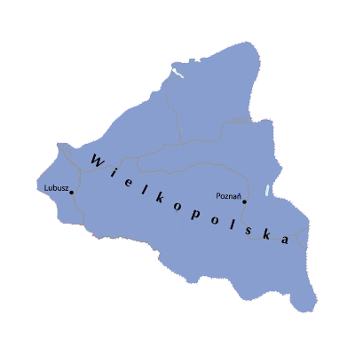

Dzielnice
Dzielnica Senioralna

Dzielnica, którą zgodnie z zasadą senioratu otrzymywać miał najstarszy książę piastowski na mocy postanowień ustawy sukcesyjnej Bolesława Krzywoustego w okresie rozbicia dzielnicowego (od 1138 roku, tj. od śmierci Bolesława III Krzywoustego). Z czasem doszło do złamania zasady senioratu. Do 1227 roku jednak jej posiadanie było związane z władzą zwierzchnią nad Polską. Z racji stolicy w Krakowie zaczęto ją nazywać księstwem krakowskim. W jej skład wchodziły początkowo: ziemia krakowska ze stolicą w Krakowie, ziemia łęczycko-sieradzka, ziemia kaliska z Kaliszem i Gnieznem, część Kujaw i Pomorza Gdańskiego. Sąsiadowała ze wszystkimi innymi dzielnicami. Teoretycznie miał ją przyłączać do swojej dzielnicy każdy kolejny aktualny senior. Czyli najstarszy spośród aktualnych władców poszczególnych dzielnic. Po śmierci którego miała przechodzić do dzielnicy następnego seniora etc. Bardzo szybko została okrojona jedynie do samej ziemi krakowskiej.
Śląsk

Powstało w 1138 roku po śmierci Bolesława III Krzywoustego (zgodnie z jego tzw. statutem) jako dzielnica przeznaczona dla jego najstarszego syna Władysława II Wygnańca i obejmowało prócz Śląska także ziemię lubuską i ziemię opolską. W XII wieku pojęcie Śląska ograniczało się tylko do jego obecnej zachodniej części z Wrocławiem i nie obejmowało początkowo władztwa książąt opolskich. Kolejni Piastowie podzielili Śląsk na liczne mniejsze księstwa, które w ciągu XIV wieku stały się lennem Królestwa Czeskiego, a królowie czescy przyjęli z czasem tytuł księcia Śląska. Od XV w. ze Śląskiem zaczęto utożsamiać również terytoria książąt górnośląskich. Po śmierci królów Czech i Polski, Wacława II w 1305 r. i Wacława III w 1306 r., księstwa śląskie stały się przedmiotem sporów między królem Czech i tytularnym królem Polski Janem Luksemburskim a królem Polski Władysławem I Łokietkiem w latach 20. XIV wieku. W 1322 roku Łokietek wykorzystał zamęt na Śląsku i na pewien czas opanował Wrocław. Przejściowo wykonywał nawet władzę zwierzchnią nad Śląskiem. Strata tego miasta przypada prawdopodobnie na lata 1324–1325. W trakcie wojny Łokietka z Brandenburgią, Jan Luksemburski po uchwaleniu podatków na wojnę przez szlachtę czeską wyruszył ze swoją armią w kierunku Polski. Jeszcze przed przekroczeniem Bramy Morawskiej do Opawy zjechali polscy książęta Bolesław niemodliński, Leszek raciborski, Kazimierz cieszyński, Władysław kozielsko-bytomski i złożyli hołd Janowi Luksemburskiemu. Następnie w Bytomiu hołd złożył mu Jan oświęcimski, a we Wrocławiu Bolesław opolski i Henryk VI wrocławski. W 1329 roku hołd złożyli mu Jan ścinawski, Bolesław brzesko-legnicki, Konrad oleśnicki i Henryk żagański.)
Mazowsze

Powstało na mocy testamentu Bolesława Krzywoustego, który w 1138 podzielił Polskę na dzielnice. Dzielnica mazowiecka została nadana Bolesławowi Kędzierzawemu. Początkowo uznawała zwierzchnictwo Krakowa, lecz zmieniło się to za panowania Konrada mazowieckiego, który uniezależnił Mazowsze i Kujawy od Krakowa, ale również przyłączył nowe ziemie. Za panowania tzw. Henryków śląskich w południowej i zachodniej a formalnie w całej Polsce, księstwo mazowieckie było jednym z trzech terytoriów polskich, niezależnych od siebie (obok państwa Henryków śląskich i Pomorza Gdańskiego). W 1226 Konrad sprowadził Krzyżaków na ziemię chełmińską, którą oddał im w dzierżawę. Zrobił to, by pomogli mu w pokonaniu Prusów i przyłączeniu ich ziemi do jego księstwa. Jednak zakonnicy postanowili utworzyć tu własne państwo zakonne (poprzednio próbowali utworzyć je na Węgrzech, lecz zostali wypędzeni przez tamtejszego króla) i tak też uczynili. W 1320 w Krakowie koronował się na króla Polski Władysław Łokietek (książę kujawski, pomorski, wielkopolski, krakowski, sandomierski, łęczycki i sieradzki) Mazowsze było księstwem piastowskim i znajdowało się w orbicie wpływów czeskich, krzyżackich, polskich i litewskich W 1321 książę płocki Wacław płocki zawarł przymierze z zakonem krzyżackim, w trakcie wojny w 1326 roku, 2 stycznia 1326 w Brodnicy przystąpili do sojuszu antypolskiego jego bracia Siemowit II (książę rawski) i Trojden I (książę czerski, warszawski i liwski). Spowodowało to w 1327 roku najazd wojsk Władysława Łokietka na Płock i Gostynin oraz Litwinów od wschodu. W związku z wyniszczeniem księstwa najazdami w 1329 Wacław płocki złożył hołd lenny Janowi Luksemburskiemu jako królowi Polski i Czech.
Wielkopolska
Po podziale państwa polskiego, w okresie rozbicia dzielnicowego w 1138 roku, pomiędzy synów Bolesława III Krzywoustego, Wielkopolska przypadła Mieszkowi III Staremu. Dzielnicą przez ponad wiek rządzili jego potomkowie, Piastowie wielkopolscy, a przejściowo także Henryk I Brodaty i Henryk II Pobożny, przedstawiciele śląskiej linii tej dynastii. W myśl zasady senioratu, Mieszko musiał uznawać zwierzchność seniora, którym był jego przyrodni, starszy brat, Władysław II Wygnaniec. Do pierwszego poważniejszego konfliktu z Władysławem doszło na przełomie 1140 i 1141, gdy juniorzy Bolesław IV Kędzierzawy i Mieszko III, zwołali razem z matką, bez wiedzy księcia seniora, wiec możnych do Łęczycy, na którym postanowiono wydać najmłodszą ich siostrę Agnieszkę za mąż za syna księcia kijowskiego Wszewołoda Olegowicza. Wojna wybuchła ponownie na początku 1146. Senior był jednak pewny zwycięstwa a sukces wydawał się w zasięgu ręki, gdyż Bolesław i Mieszko, obawiając się starcia w otwartym polu, zamknęli się w umocnionym Poznaniu, rychło oblężonym przez Władysława. Tam doszło do niespodziewanego zwrotu i klęski. Przyczynami przegranej Władysława były klątwa kościelna, rzucona przez metropolitę gnieźnieńskiego Jakuba ze Żnina oraz skuteczna odsiecz zorganizowana przez możnych przeciwnych powrotowi jedynowładztwa. Klęska była zupełna – jeszcze przed majem 1146 cała Polska znalazła się w rękach juniorów, zaś Władysław został wygnany do Niemiec na dwór króla rzymskiego Konrada III. Objąwszy władzę w Polsce, Bolesław IV Kędzierzawy i Mieszko III zaprowadzili w niej nowe porządki. Nowym seniorem został starszy Bolesław, który przejął również dzielnicę dziedziczną Władysława, tj. Śląsk. Mieszko w nowej rzeczywistości zadowolił się rolą ścisłego współpracownika brata. Własną dzielnicę objął wtedy młodszy brat, Henryk, tj. Sandomierszczyznę W sierpniu 1146 na Polskę ruszyła wyprawa króla Konrada III z zamiarem przywrócenia na tron Władysława II Wygnańca (Wojna polsko-niemiecka (1146)). Przedsięwzięcie to poniosło klęskę na skutek wylewu Odry i niechęci wobec wojny feudałów niemieckich. Ostatecznie doszło do porozumienia, na mocy którego Konrad III uznał władzę Bolesława w zamian za hołd lenny i trybut. Spór juniorów z Władysławem miał zostać rozstrzygnięty w późniejszym terminie, na zjeździe w Niemczech, na który zobowiązali się stawić Bolesław i Mieszko. Zapowiadane rokowania nie odbyły się, gdyż Konrad był zajęty przygotowaniami do krucjaty. W ciąż ubiegający się o tron Władysław spotkał się w 1157 w Bambergu z nowy cesarzem i wyjednał kolejną interwencję w Polsce (Wojna polsko-niemiecka (1157)). Do wyprawy cesarza rzymskiego Fryderyka Barbarossy przeciw Polsce doszło już w tym samym roku. Z nieznanych przyczyn Bolesław i Mieszko nie próbowali tradycyjnej obrony na linii Odry – spalili tamtejsze grody w Głogowie i Bytomiu i rozpoczęli odwrót. Wojska cesarskie bez problemu wkroczyły w głąb Wielkopolski. Bolesław IV Kędzierzawy nie podejmował walki. Gdy cesarz dotarł pod Poznań, Bolesław poprosił o pokój, który faktycznie zawarto w obozie cesarskim pod Krzyszkowem. Tam doszło do upokarzającego hołdu lennego Bolesława, który z mieczem uwiązanym u szyi prosił Fryderyka o przebaczenie. Władcy Polski zapłacili również cesarzowi trybut, obiecali przysłać posiłki na wyprawę włoską oraz stawić się na Boże Narodzenie w Magdeburgu, gdzie miał być rozstrzygnięty ostatecznie spór z wygnanym seniorem rodu Władysławem. Jako gwarancję wypełnienia układu juniorzy wysłali do Niemiec zakładników z młodym Kazimierzem Sprawiedliwym na czele. Dzięki zaangażowaniu się cesarza w sprawy włoskie i śmierci Władysława II w maju 1159, juniorzy nie byli zmuszeni wypełniać groźnych dla nich postanowień krzyszkowskich (śmierć Władysława umożliwiła powrót jego synów – Bolesława Wysokiego i Mieszka Plątonogiego w 1163). Gdy 5 stycznia 1173 umarł Bolesław Kędzierzawy, Mieszko został księciem seniorem. Władzę Mieszka III uznali wszyscy książęta w Polsce, a nowy princeps odtąd tytułował się księciem całej PolskiPo podziale państwa polskiego, w okresie rozbicia dzielnicowego w 1138 roku, pomiędzy synów Bolesława III Krzywoustego, Wielkopolska przypadła Mieszkowi III Staremu. Dzielnicą przez ponad wiek rządzili jego potomkowie, Piastowie wielkopolscy, a przejściowo także Henryk I Brodaty i Henryk II Pobożny, przedstawiciele śląskiej linii tej dynastii. W myśl zasady senioratu, Mieszko musiał uznawać zwierzchność seniora, którym był jego przyrodni, starszy brat, Władysław II Wygnaniec. Do pierwszego poważniejszego konfliktu z Władysławem doszło na przełomie 1140 i 1141, gdy juniorzy Bolesław IV Kędzierzawy i Mieszko III, zwołali razem z matką, bez wiedzy księcia seniora, wiec możnych do Łęczycy, na którym postanowiono wydać najmłodszą ich siostrę Agnieszkę za mąż za syna księcia kijowskiego Wszewołoda Olegowicza. Wojna wybuchła ponownie na początku 1146. Senior był jednak pewny zwycięstwa a sukces wydawał się w zasięgu ręki, gdyż Bolesław i Mieszko, obawiając się starcia w otwartym polu, zamknęli się w umocnionym Poznaniu, rychło oblężonym przez Władysława. Tam doszło do niespodziewanego zwrotu i klęski. Przyczynami przegranej Władysława były klątwa kościelna, rzucona przez metropolitę gnieźnieńskiego Jakuba ze Żnina oraz skuteczna odsiecz zorganizowana przez możnych przeciwnych powrotowi jedynowładztwa. Klęska była zupełna – jeszcze przed majem 1146 cała Polska znalazła się w rękach juniorów, zaś Władysław został wygnany do Niemiec na dwór króla rzymskiego Konrada III. Objąwszy władzę w Polsce, Bolesław IV Kędzierzawy i Mieszko III zaprowadzili w niej nowe porządki. Nowym seniorem został starszy Bolesław, który przejął również dzielnicę dziedziczną Władysława, tj. Śląsk. Mieszko w nowej rzeczywistości zadowolił się rolą ścisłego współpracownika brata. Własną dzielnicę objął wtedy młodszy brat, Henryk, tj. Sandomierszczyznę. W sierpniu 1146 na Polskę ruszyła wyprawa króla Konrada III z zamiarem przywrócenia na tron Władysława II Wygnańca (Wojna polsko-niemiecka (1146)). Przedsięwzięcie to poniosło klęskę na skutek wylewu Odry i niechęci wobec wojny feudałów niemieckich. Ostatecznie doszło do porozumienia, na mocy którego Konrad III uznał władzę Bolesława w zamian za hołd lenny i trybut. Spór juniorów z Władysławem miał zostać rozstrzygnięty w późniejszym terminie, na zjeździe w Niemczech, na który zobowiązali się stawić Bolesław i Mieszko. Zapowiadane rokowania nie odbyły się, gdyż Konrad był zajęty przygotowaniami do krucjaty. W ciąż ubiegający się o tron Władysław spotkał się w 1157 w Bambergu z nowy cesarzem i wyjednał kolejną interwencję w Polsce (Wojna polsko-niemiecka (1157)). Do wyprawy cesarza rzymskiego Fryderyka Barbarossy przeciw Polsce doszło już w tym samym roku. Z nieznanych przyczyn Bolesław i Mieszko nie próbowali tradycyjnej obrony na linii Odry – spalili tamtejsze grody w Głogowie i Bytomiu i rozpoczęli odwrót. Wojska cesarskie bez problemu wkroczyły w głąb Wielkopolski. Bolesław IV Kędzierzawy nie podejmował walki. Gdy cesarz dotarł pod Poznań, Bolesław poprosił o pokój, który faktycznie zawarto w obozie cesarskim pod Krzyszkowem. Tam doszło do upokarzającego hołdu lennego Bolesława, który z mieczem uwiązanym u szyi prosił Fryderyka o przebaczenie. Władcy Polski zapłacili również cesarzowi trybut, obiecali przysłać posiłki na wyprawę włoską oraz stawić się na Boże Narodzenie w Magdeburgu, gdzie miał być rozstrzygnięty ostatecznie spór z wygnanym seniorem rodu Władysławem. Jako gwarancję wypełnienia układu juniorzy wysłali do Niemiec zakładników z młodym Kazimierzem Sprawiedliwym na czele. Dzięki zaangażowaniu się cesarza w sprawy włoskie i śmierci Władysława II w maju 1159, juniorzy nie byli zmuszeni wypełniać groźnych dla nich postanowień krzyszkowskich (śmierć Władysława umożliwiła powrót jego synów – Bolesława Wysokiego i Mieszka Plątonogiego w 1163). Gdy 5 stycznia 1173 umarł Bolesław Kędzierzawy, Mieszko został księciem seniorem. Władzę Mieszka III uznali wszyscy książęta w Polsce, a nowy princeps odtąd tytułował się księciem całej Polski
Sandomierska
średniowieczne polskie księstwo dzielnicowe istniejące na ziemi sandomierskiej w latach 1138–1320 ze stolicą w Sandomierzu. Powstało na skutek rozbicia dzielnicowego Polski przez testament Bolesława III Krzywoustego w 1138 roku. Na początku księstwo sandomierskie znalazło się w granicach dzielnicy senioralnej, ale po kilkunastu latach zostało wydzielone na rzecz Henryka Sandomierskiego i znalazło się na południowo-wschodniej części państwa polskiego.